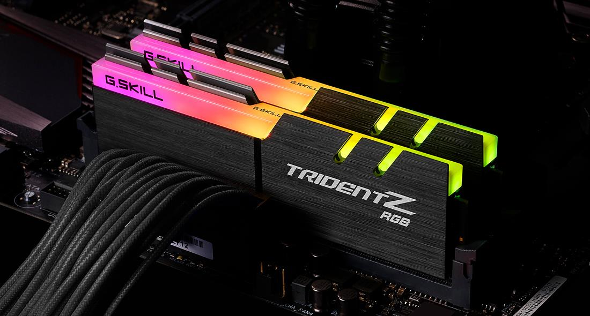

Lista de Novedades
Memorias RAM
¿Qué mejoras trae la memoria RAM DDR5 frente a la DDR4?
Tal y como prometieron los fabricantes, a partir de 2020 la memoria RAM DDR5 ya ha entrado en fase comercial, y no pasará mucho tiempo hasta que veamos las primeras placas base que ya adopten esta nueva tecnología. Pero, ¿qué mejoras traerá frente a la DDR4 y, más importante, será un salto que merezca la pena dar? Vamos a verlo.
El estándar DDR5 establecido por el JEDEC ofrecerá el doble de ancho de banda que la memoria RAM DDR4, una mayor eficiencia por canal y todo esto combinado con una interfaz más fácil de utilizar para los usuarios (ahora bien, no han especificado nada de esto y realmente, no es que tenga mucha dificultad la interfaz que tiene ahora, ya que simplemente hay que insertar un módulo en un zócalo y listo). En definitiva, la memoria RAM DDR5 debe proporcionar más rendimiento y mejor eficiencia que la RAM DDR4.
Más velocidad, más densidad y menos consumo

La velocidad mínima del nuevo estándar de memoria RAM es la DDR5-4800, lo que significa que el controlador de memoria realiza 4800 millones de transferencias por segundo, y dado que es una RAM del tipo Dual Data Rate su controlador de memoria funciona a 2400 MHz o 2.4 GHz, por lo que hasta este punto la DDR5 no difiere de anteriores estándares como la actual DDR4. Además, al igual que en cada generación el voltaje ha bajado, lo que le permite aumentar la velocidad de reloj. En concreto han bajado el voltaje a los 1,1 voltios, y esto le permite consumir un 30% menos de energía que la memoria RAM DDR4 estándar por bit transmitido.
Para este estándar se han centrado en desarrollar tecnologías que permitan aumentar la velocidad de funcionamiento manteniendo el voltaje, a la vez que se reduce el ruido eléctrico en transmisiones a tan alta velocidad. Para ello han creado una tecnología de sincronización multifásica, novedad en la memoria RAM, que permite realizar estas transmisiones a un voltaje más bajo, ya que pondrán varias fases en el mismo PCB, de manera que se baje el consumo en cada fase, pero que, combinados, permiten una alta velocidad.
Todos estos números parecen muy prometedores, pero la realidad es que el aumento de rendimiento en tareas reales en un PC será bastante escaso, al menos al principio, dado que la RAM DDR4 a estas alturas ya está proporcionando casi esas velocidades de fábrica en muchos fabricantes. En cuanto al consumo, sí que consumirán menos, pero teniendo en cuenta que proporcionalmente el consumo de la RAM afecta muy poco al global de un PC, no es un factor que vaya a ser determinante para poder decir que merece la pena.
El futuro de la memoria RAM DDR5
Es cierto que la DDR5 ya está empezando a llegar, pero también lo es que los fabricantes ya tienen la vista puesta en la DDR6. Ese estándar permitiría llegar a velocidades de transmisión de hasta 12 Gbps por chip (frente a los 5.2 Gbps de la DDR5), lo que implicaría un 60% de incremento de velocidad frente a la DDR4, una cifra que ya sí que es bastante considerable.
Según las previsiones de los analistas de la industria, en 2021 un 25% de la demanda total de memoria RAM a nivel global corresponderá a la DDR5, mientras que para 2020 se espera que esa cifra suba a un 44%. ¿Qué significa esto? Que la adopción del nuevo estándar será bastante rápida. Hacia 2025 nos encontraríamos en la misma situación en la que estamos ahora con la DDR4, momento en el que ya estaremos hablando del estándar DDR6.
Ahora bien, como siempre el factor más importante a tener en cuenta para la adopción de una nueva tecnología será el precio. Está claro que el estándar ya está listo y que los fabricantes de placas base y procesadores trabajan para implementarla, pero si el coste de fabricación de estos nuevos productos va a ser muy elevado, entonces la demanda no será la que pretenden que sea. En otras palabras: si el precio sube demasiado, los usuarios seremos más reacios a actualizar y buscaremos mantener más tiempo los sistemas actuales que tengamos.
Prefetch en DDR5
Es uno de los apartados más interesantes que se pueden encontrar entre DDR4 y DDR5. Las mejoras en la arquitectura del prefetch hacen referencia al número de datos que se pueden leer a la vez en cuanto a unidades se refiere. Así 1n realizaría una lectura a la unidad de datos, 2n duplicaría esa cifra y así sucesivamente.
Esto comúnmente se describe dentro de un búfer de datos para prefetch, el cual siempre hace referencia al 1n teniendo como base precisamente la SDRAM. DDR4 es 8n frente a SDRAM, pero DDR5 aumentará hasta 16n dicha cifra, por lo que literalmente podrá leer el doble de datos que la generación anterior de memoria.
Entonces, ¿merecerá la pena actualizar?
Como siempre, depende. Ya hemos mencionado el factor determinante que es el precio, pero finalmente pasará como con todas las tecnologías que se actualizan: la anterior desaparecerá (es lo que hace tiempo que ya sucedió con la DDR3, imposible encontrarla en tiendas y ya solo podemos comprar DDR4). Por este motivo, al final queramos o no, tendremos que adoptar la tecnología salvo que aguantemos la DDR4 el tiempo suficiente hasta que salga la DDR6.
Respondiendo a la pregunta, inicialmente no merecerá la pena actualizar. Tendremos mejor rendimiento y menos consumo, sí, pero el cambio no será lo suficientemente sustancioso como para que sea un motivo de actualización de plataforma (y menos con lo que ello conlleva, ya que no hablamos solo de cambiar la RAM sino también placa y procesador). Ya pasado el tiempo, cuando se estandarice, estaremos hablando de otros términos.
A nivel de rendimiento lo mejor que tiene la DDR5 es el hecho de ser una RAM de doble canal, esto significa que puede proveer a dos peticiones a la RAM simultáneas. Lo cual es una novedad en las RAM Dual Data Rate y se parece en este aspecto a la GDDR6. Esto no significa que el ancho de banda de la DDR5 se haya visto duplicado, ya que en vez de transmitir 64 bits en un solo canal lo que hace es transmitir 32 bits en dos canales.